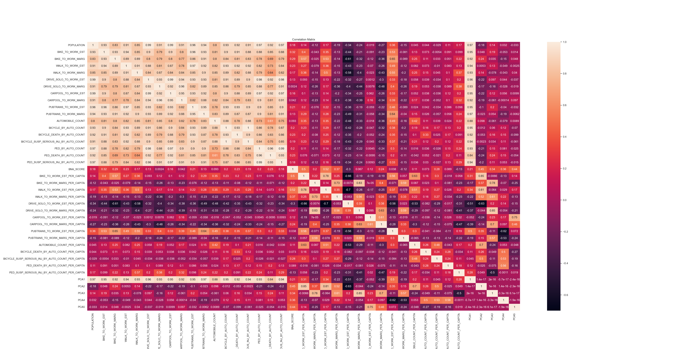
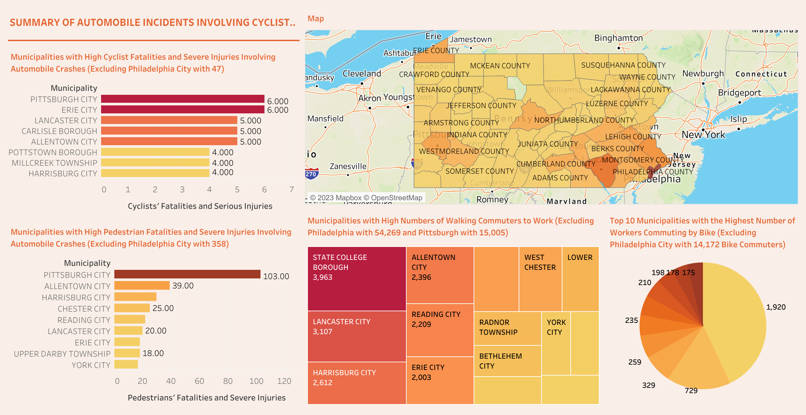
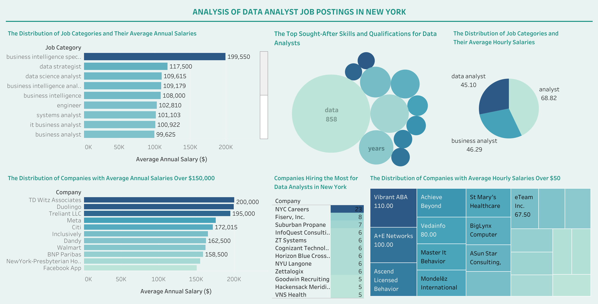

This study is a part of my ongoing data analytics internship at the Center for Civic Learning & Action (CCLA).
It is a comprehensive analysis and modeling project aimed at improving road safety and infrastructure for vulnerable road users, such as cyclists and pedestrians, in the Carlisle Borough area.
It also employs a data-driven approach, utilizing Python for web scraping, replication techniques, and predictive modeling.


In this coding project, my primary objective is to merge and analyze Pennsylvania Crash Data and American Community Survey (ACS) Data from 2017 to 2021. My goal is to provide a comprehensive summary of crash-related statistics in Pennsylvania, with a particular emphasis on incidents involving cyclists and pedestrians.

It's essential to understand the overall Data Analyst job titles and company distributions with average hourly and annual income, as well as the most sought-after skills and qualifications for data analysts in New York, NY. The dataset with 553 job postings was collected from Indeed.com and my goal is to provide valuable insights into the current job market and trends in the data analyst field and give people embarking on their journey of searching for data analyst jobs.